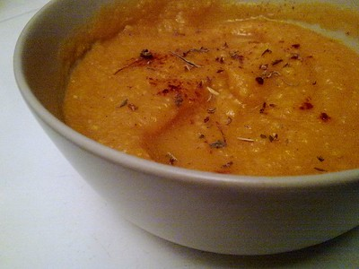

HOME
Spicy Pumpkin Soup

Description
A delicious bowl of pumpkin soup.
Picture attributable to: "Receta de crema de calabaza y zanahoria / Vegan Pumpkin soup"
by Lablascovegmenu is licensed under CC BY 2.0. To view a copy of this license, visit License.
Ingredients
- One (1) tablespoon of unsalted butter
- One and half (1-1/2) cups of chopped onions
- Two (2) cloves of minced garlic
- Two (2) teaspoons of minced ginger
- One and half (1-1/2) teaspoons of curry powder
- Three quarters (3/4) teaspoon of ground cumin
- One half (1/2) teaspoon of ground coriander
- One (1) pinch of cinnamon
- One (1) teaspoon of salt
- Four (4) cups of chicken or vegetable stock
- Two (2) bay leaves
- Three and half (3-1/2) cups of pumpkin puree
- One (1) cup of water
- Three (3) tablespoon of heavy cream
- One eigth (1/8) teaspoon of black pepper
Steps
- Saute onions, garlic and ginger with butter over medium heat
for five (5) to six (6) minutes
- Add curry powder, cumin, coriander, cinnamon, and salt. Then continue cooking of two (2) minutes
- Add water, stock, bay leaves,and pumpkin puree. Increase heat to high and bring to boil
Once boiling, reduce heat to low, cover and simmer for ten (10) to fifteen (15) minutes
- Remove from heat and remove bay leaves. Using immersion blender, puree the soup
- Add black pepper and serve chilled or hot